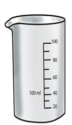

Volume
Volume is the space that can be occupied by an object. The volume of objects can be compared by looking at the amount of space that fills the device. There are objects with large volumes and others with small volumes.
Example
A cup has a smaller volume than a bucket.


Recognizing standard tools for measuring volume

Measuring cylinder

beaker

bucket